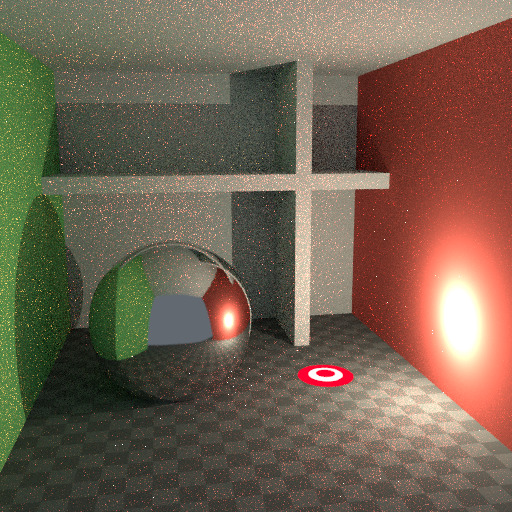
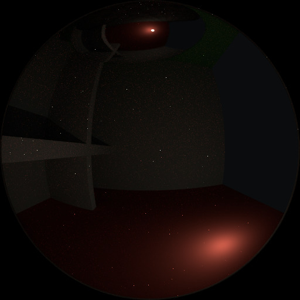
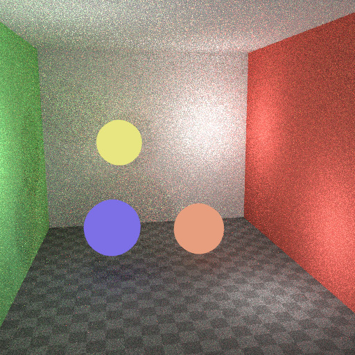

Reducing Noise¶
When performing a final render, it is important to reduce noise as much as possible. Here we will discuss a number of tricks that, while breaking the laws of physics, are particularly important when rendering animations within a reasonable time. Click to enlarge the example images to see the noise differences well.
Path Tracing¶
Cycles uses path tracing with next event estimation, which is not good at rendering all types of light effects, like caustics, but has the advantage of being able to render more detailed and larger scenes compared to some other rendering algorithms. This is because we do not need to store, for example, a photon map in memory, and because we can keep rays relatively coherent to use an on-demand image cache, compared to e.g. bidirectional path tracing.

We do the inverse of what reality does, tracing light rays from the camera into the scene and onto lights, rather than from the light sources into the scene and then into the camera. This has the advantage that we do not waste light rays that will not end up in the camera, but also means that it is difficult to find some light paths that may contribute a lot. Light rays will be sent either according to the surface BRDF, or in the direction of known light sources.
See also
For more details, see the Light Paths and Sampling documentation.
Where Noise Comes From¶
To understand where noise can come from, take for example the scene below. When we trace a light ray into the location marked by the white circle on a red dot, the second image below gives an impression of what the diffuse shader “sees”.
To find the light that is reflected from this surface, we need to find the average color from all these pixels. Note the glossy highlight on the sphere, and the bright spot the light casts on the nearby wall. These hotspots are 100x brighter than other parts of the image and will contribute significantly to the lighting of this pixel.

The scene. |

Irradiance at the shading point. |

The detected highlights. |
{kind=link}
{kind=link}
The light is a known light source, so its location is already known, but the glossy highlight(s) that it causes are a different matter. The best we can do with path tracing is to distribute light rays randomly over the hemisphere, hoping to find all the important bright spots. If for some pixels we miss some bright spot, but we do find it for another, that results in noise. The more samples we take, the higher the probability that we cover all the important sources of light.
With some tricks we can reduce this noise. If we blur the bright spots, they become bigger and less intense, making them easier to find and less noisy. This will not give the same exact result, but often it’s close enough when viewed through a diffuse or soft glossy reflection. Below is an example of using Glossy Filter and Light Falloff.

Using Glossy Filter & Light Falloff. |

Irradiance at the shading point. |

The detected highlights. |
Bounces¶
In reality light will bounce a huge number of times due to the speed of light being very high. In practice more bounces will introduce more noise, and it might be good to use something like the Limited Global Illumination preset in the Light Paths Section that uses fewer bounces for different shader types. Diffuse surfaces typically can get away with fewer bounces, while glossy surfaces need a few more, and transmission shaders such as glass usually need the most.

No bounces. |
{kind=link}
{kind=link}
Also important is to use shader colors that do not have components of value 1.0 or values near that; try to keep the maximum value to 0.8 or less and make your lights brighter. In reality, surfaces are rarely perfectly reflecting all light, but there are of course exceptions; usually glass will let most light through, which is why we need more bounces there. High values for the color components tend to introduce noise because light intensity then does not decrease much as it bounces off each surface.
Caustics and Filter Glossy¶
Caustics are a well-known source of noise, causing fireflies. They happen because the renderer has difficulty finding specular highlights viewed through a soft glossy or diffuse reflection. There is a No Caustics option to disable glossy behind a diffuse reflection entirely. Many renderers will typically disable caustics by default.

Default settings. |

Caustics disabled. |

Filter Glossy greater than zero. |
However, using No Caustics will result in missing light, and it still does not cover the case where a sharp glossy reflection is viewed through a soft glossy reflection. There is a Filter Glossy option to reduce the noise from such cases at the cost of accuracy. This will blur the sharp glossy reflection to make it easier to find, by increasing the shader Roughness.
The above images show default settings, no caustics, and filter glossy set to 1.0.
Light Falloff¶
In reality light in a vacuum will always fall off at a rate of 1/(distance^2). However, as distance goes to zero, this value goes to infinity and we can get very bright spots in the image. These are mostly a problem for indirect lighting, where the probability of hitting such a small but extremely bright spot is low and so happens only rarely. This is a typical recipe for fireflies.

Hard Falloff. |

Soft Falloff. |
To reduce this problem, the Light Falloff node has a Smooth factor, that can be used to reduce the maximum intensity a light can contribute to nearby surfaces. The images above show default falloff and smooth value 1.0.
Multiple Importance Sampling¶
Materials with emission shaders can be configured to use Multiple Importance Sampling (Material Settings). This means that they will get rays sent directly towards them, rather than ending up there based on rays randomly bouncing around. For very bright mesh light sources, this can reduce noise significantly. However, when the emission is not particularly bright, this will take samples away from other brighter light sources for which it is important to find them this way.
The optimal setting here is difficult to guess; it may be a matter of trial and error, but often it is clear that a somewhat glowing object may be only contributing light locally, while a mesh light used as a light would need this option enabled. Here is an example where the emissive spheres contribute little to the lighting, and the image renders with slightly less noise by disabling Multiple Importance on them.

Multiple Importance off. |

Multiple Importance on. |
{kind=link}
The world background also has a Multiple Importance (Settings) option. This is mostly useful for environment maps that have small bright spots in them, rather than being smooth. This option will then, in a preprocess, determine the bright spots, and send light rays directly towards them. Again, enabling this option may take samples away from more important light sources if it is not needed.
Glass and Transparent Shadows¶
With caustics disabled, glass will miss shadows, and with filter glossy they might be too soft. We can make a glass shader that will use a Glass BSDF when viewed directly, and a Transparent BSDF when viewed indirectly. The Transparent BSDF can be used for transparent shadows to find light sources straight through surfaces, and will give properly-colored shadows, but without the caustics. The Light Path node is used to determine when to use which of the two shaders.

Optimized glass shader.
Above we can see the node setup used for the glass transparency trick; on the left the render has too much shadow due to missing caustics, and on the right the render with the trick.

Default Glas BSDF. |

Optimized Glass Shader. |
Light Portals¶
When rendering a daylight indoor scene where most of the light is coming in through a window or door opening, it is difficult for the integrator to find its way to them. To fix this, use Light Portals. You then will need to modify its shape to match that of the opening that you are trying to fill.


Denoising¶
Even with all the settings described above there will always end up being some render noise no matter how many samples you use. To fix this there is a post-processing technique to cleanup the final bit of noise. To use this enable Denoising in the Render Layers tab of the Properties editor.
Below is an example render by The Pixelary.

Example render before denoising. |

Example render after denoising. |
Clamp Fireflies¶
Ideally with all the previous tricks, fireflies would be eliminated, but they could still happen. For that, the intensity that any individual light ray sample will contribute to a pixel can be clamped to a maximum value with the integrator Clamp setting.
If set too low this can cause missing highlights in the image, which might be useful to preserve for camera effects such as bloom or glare. To mitigate this conundrum it’s often useful to clamp only indirect bounces, leaving highlights directly visible to the camera untouched.

No Clamp (0). |

With Clamp set to 4. |